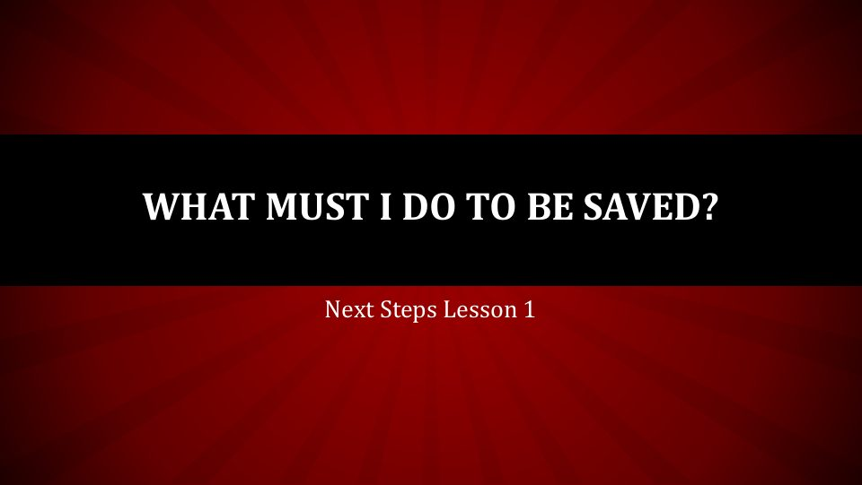

A word before you begin
Thirty years in the making
What you’ll find here is more than thirty years of writing and composing, gathered in one place for the first time. These songs, sermons, studies, and books were written through every season of life and ministry, on the mountaintops and in the valleys. Much of it was never meant for anyone but God and me.
I share it now with one prayer: that something here meets you right where you are, and points you to the Rock that is higher than I.
This work is dedicated first to the Lord Jesus Christ, who gave every song and every word worth keeping. And to my family, who lived these pages with me.
Bro. John Kennon
The album · John P. Kennon
We Will Overcome
We Will Overcome is a gospel album with a Southern road under it: songs of victory through the blood of the Lamb, written for anyone fighting their way from trouble to testimony.
Books · John P. Kennon
Written from the valley floor
Books, devotionals, and teaching studies by John P. Kennon: Scripture opened plainly, testimony told honestly, and the apostolic faith of the Book of Acts lived out in everyday life.

Bible study · Next Steps, Lesson 1
What Must I Do to Be Saved?
A doctrinal overview from the Book of Acts. This lesson starts with the human condition and the gospel of the death, burial, and resurrection of Jesus, then walks through grace and faith, repentance, baptism in the name of Jesus, and the gift of the Holy Ghost, the plan Peter preached on the Day of Pentecost.
Open it on your own, or teach it to a small group or new believer. It is also available in Spanish.
About
Minister. Musician. Writer.
Bro. John Kennon is a local minister who has spent more than thirty years writing the way he preaches: straight from Scripture, honest about the hard places, and certain that God rebuilds what life tears down.
At home, he is blessed with a beautiful wife, four lovely daughters, three sons, two amazing sons-in-law, two amazing daughters-in-law, and a five-year-old grandson.
Get in touch
Prayer requests, booking for preaching or music, questions about the books, or just a word of encouragement. Bro. John reads every message.
Check the box to hear first about book releases and new songs.
Thank you. Your message is on its way, and Bro. John will get back to you.